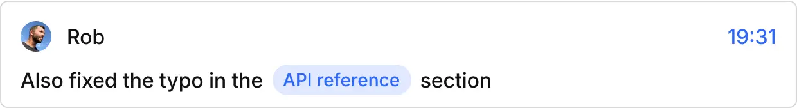

Schema
Builder
Design content structures your way.
Scalar CMS gives you full control over content with a streamlined, API-first experience — perfect for teams who want speed without sacrificing flexibility.

Real Time Collaboration
Built for content teams.
Draft, review, and publish content with confidence. Autosave, rich text editing, role-based permissions, and revision history come standard.


Asset Management
Organize your media like a pro.
Upload, crop, tag, and reuse images, videos, and docs with our sleek asset manager. Automatically optimizes files and handles CDN delivery.
Granular Permissions
Control who does what.
Create roles for editors, developers, and guests with precision. Lock down fields, models, or even specific actions.
Compatibility
Works out of the box with:
// app/lib/scalar.ts
import { createClient } from '@scalar/api-client';
export const scalar = createClient({
projectId: process.env.NEXT_PUBLIC_SCALAR_PROJECT_ID,
apiKey: process.env.SCALAR_API_KEY,
});Trusted by Fast-Moving Teams
Scalar CMS changed how we ship content. It's fast, intuitive, and plays perfectly with our stack.